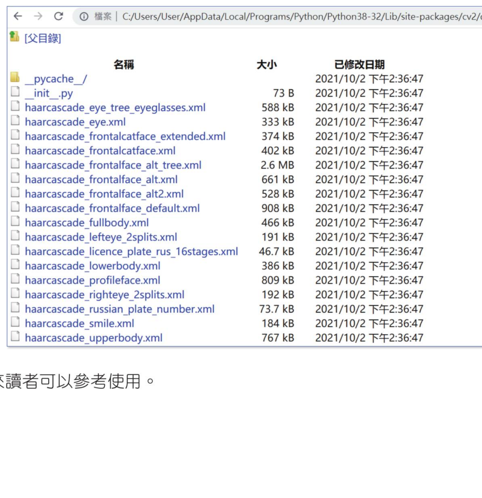

安装 OpenCV
安装 Numpy
OpenCV 是用二维或是三维阵列代表图像，阵列元素就是图像的像素值，OpenCV 使用 Numpy 的资料格式与工具执行阵列运算，所以在安装 OpenCV 前须使用下列方式安装 Numpy。
基本安装 OpenCV
在 Windows 环境下可以使用下列指令执行基本安装 OpenCV。
如果你的电脑有安装 2 个或更多版本的 Python，如果执行上述安装，OpenCV 将被安装在旧版本。例如：笔者电脑安装了 Python 3.7 与 Python 3.85，在 Windows 的 DOS 环境执行上述安装时，OpenCV 被安装在 Python 3.7 版。
笔者每次启动 Python 3.8 版时，同时有 py.exe 程式自动被启动，如果希望 OpenCV 安装在 Python 3.85 版，方法是使用下列指令。
整个过程如下：
上述所叙述的是安装了 opencv-python 的主要模组。
扩展模组安装
OpenCV-python 除了有主要模组，另外有扩展模组，扩展模组包含一些含专利需要收费的演算法，以及目前尚在测试的演算法（这些测试的演算法在稳定后未来也会并入主要模组），如果想要一起安装，可以执行下列指令安装。
OpenCV 的阶层式分类器资源档案
人脸辨识是计算机技术的一种，这个技术可以测出人脸在图像中的位置，同时也可以找出多个人脸，在检测过程中基本上会忽略背景或其他物体，例如：身体、建筑物或树木，... 等。当然在检测过程，很重要的是与图像资料库互相匹配比对，所用的技术是哈尔（Harr）特征。
OpenCV 已经将许多已经训练测试过的面部、笑脸、路人、上半身、下半身、猫等特征分类档案储存在 haarcascades 资料夹内。安装 OpenCV 时，这个资料夹会被自动拷贝至下列资料夹。
进入此资料夹可以看到下列所有的档案。

未来读者可以参考使用。